Stories with evidence.
Work with a pulse.
Original films, premium factual series, authored audio and restored library work.
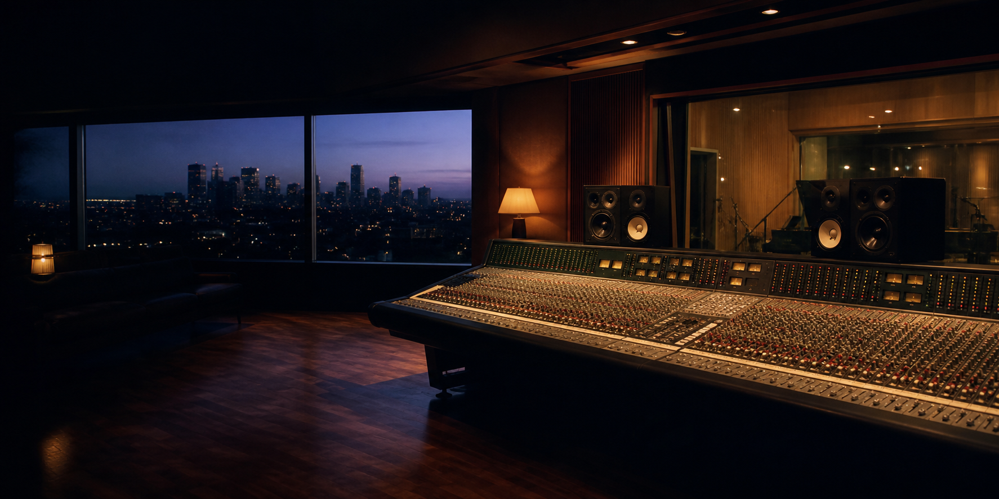
PMO001Feature documentary · 2023
The Rooms Between Notes
Recording rooms and the people who hear them.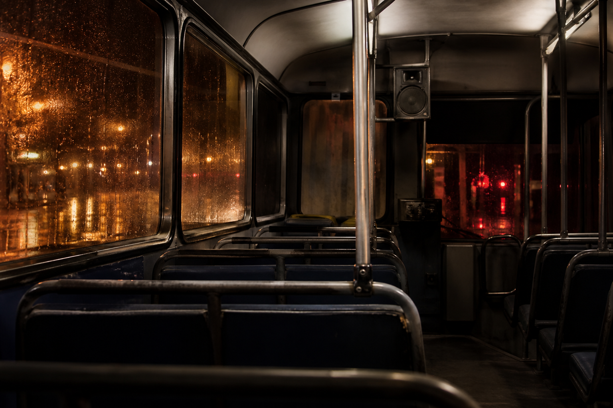
PMO002Limited series · 2024
Night Bus Radio
After midnight, a city tells the truth differently.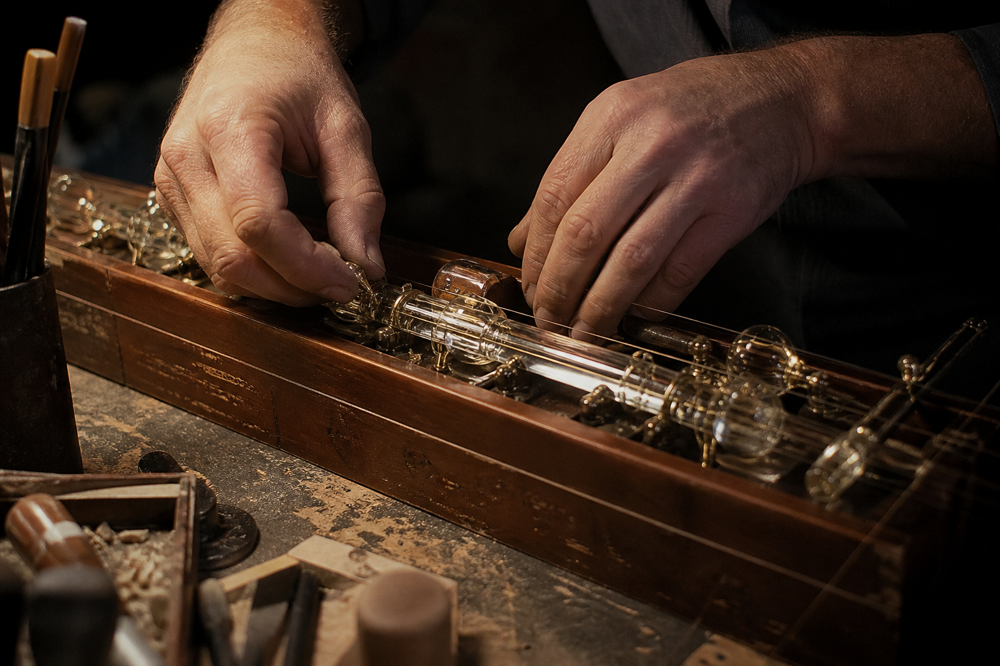
PMO003Documentary podcast · 2024
Hands on Glass
Independent instrument makers describe what the hand knows.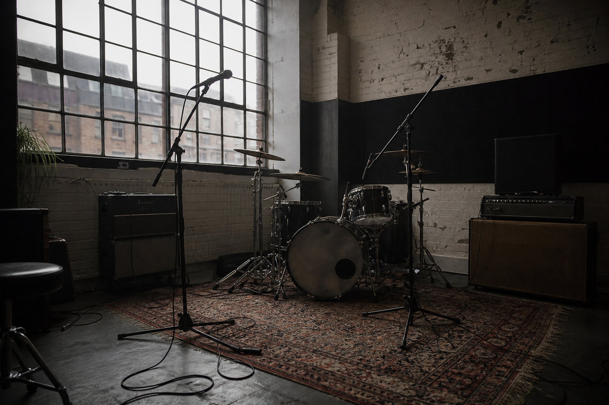
PMO004Feature documentary · 2025
The Last Rehearsal Room
A working room disappears one rent review at a time.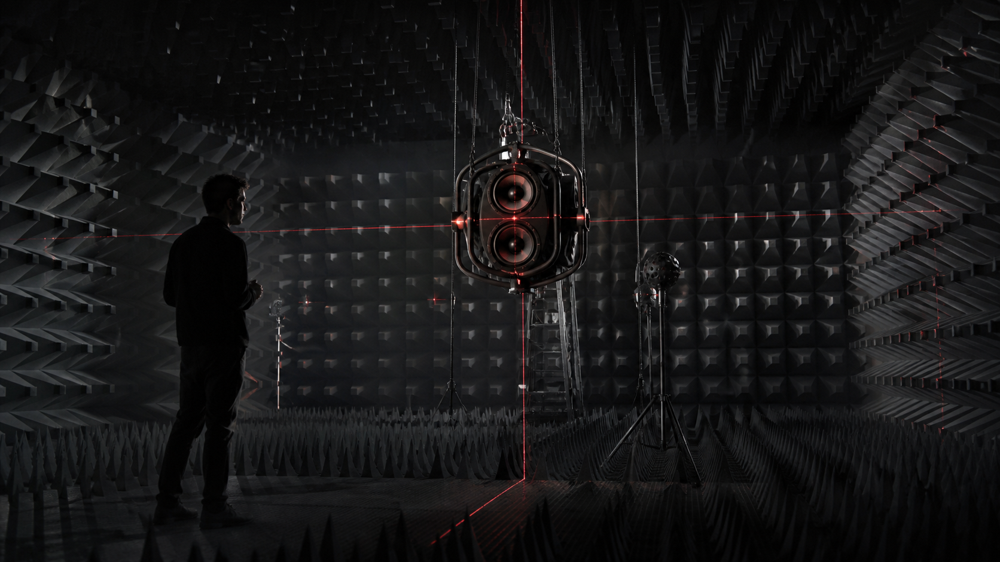
PMO005Limited series · Forthcoming
Frequency Map
Every industry borrows a way of listening.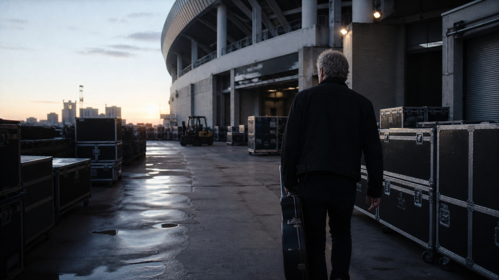
PMO006Documentary podcast · Forthcoming
After the Encore
What remains when touring stops?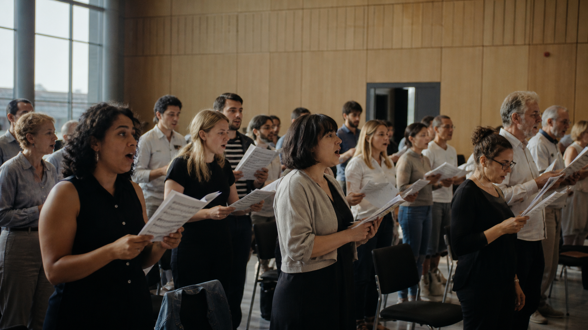
PMO007Feature documentary · Forthcoming
Borderless Choir
Three cities learn the same song in different languages.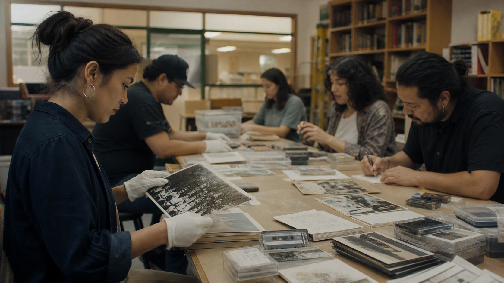
PMO008Feature documentary · TBD
The Archive Is a Verb
Memory survives because somebody does the work.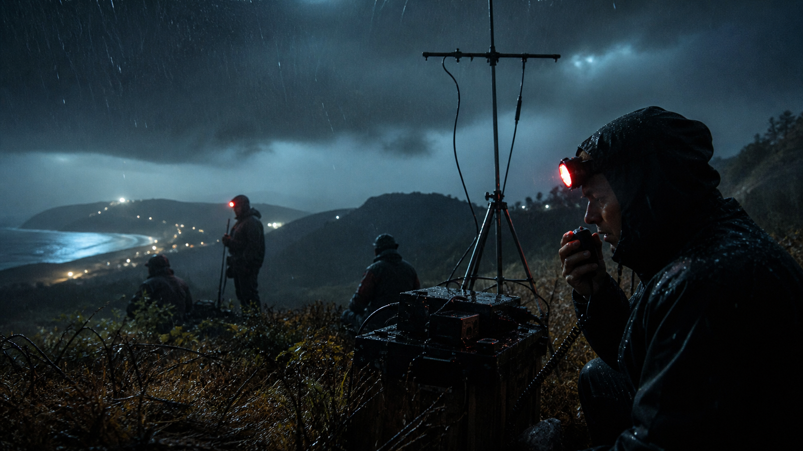
PMO009Limited series · TBD
Signal Fires
When networks fail, communities build their own.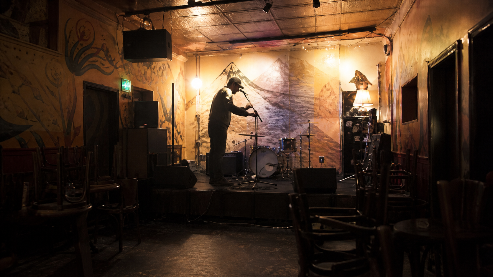
PMO010Documentary podcast · TBD
Small Rooms First
Established performers remember the rooms before the room knew them.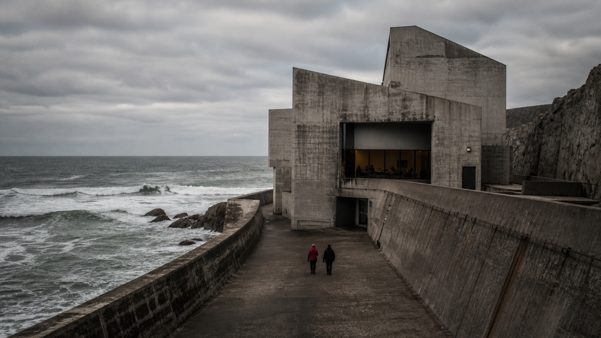
PMO011Feature documentary · TBD
Coastline Concrete
Music architecture meets redevelopment at the edge of the sea.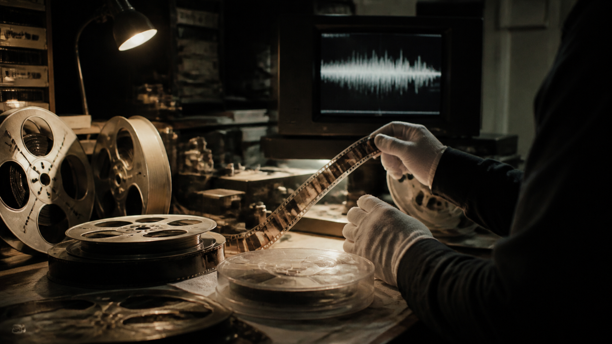
PMO012Library restoration · TBD